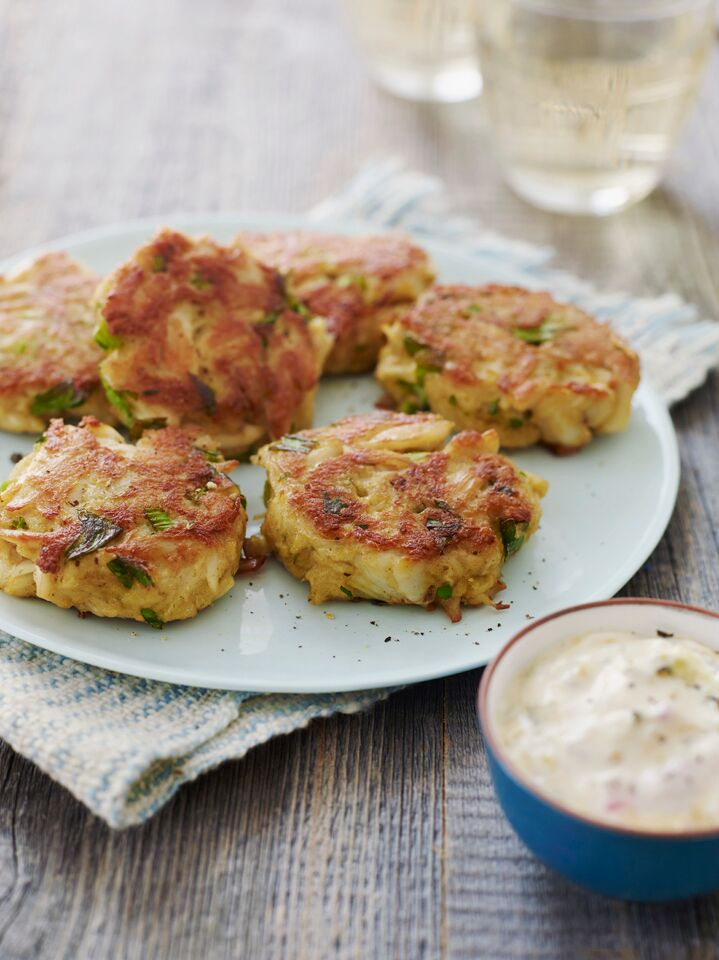

Crab Cake Recipe
Home

Crab Cake Recipe Description
This is a Maryland Steamed Crab Cake recipe with
instructions for a sauce. No need to steam your
own live crabs in a pot but do try to get fresh crab meat.
Ingredients
For the crab cakes
- 2 large eggs
- 2½ tablespoons mayonnaise, best quality such as Hellmann's or Duke's
- 1½ teaspoons Dijon mustard
- 1 teaspoon Worcestershire sauce
- 1 teaspoon Old Bay seasoning
- ¼ teaspoon salt
- ¼ cup finely diced celery, from one stalk
- 2 tablespoons finely chopped fresh parsley
- 1 pound lump crab meat (see note below)
- ½ cup panko
- Vegetable or canola oil, for cooking
For the sauce
- 1 cup mayonnaise, best quality such as Hellmann's or Duke's
- 1½ tablespoons sweet pickle relish
- 1 teaspoon Dijon mustard
- 1 tablespoon minced red onion
- 1-2 tablespoons lemon juice, to taste
- Salt and freshly ground black pepper, to taste
Instructions
For the crab cakes
- Line a baking sheet with aluminum foil for easy clean-up.
- Combine the eggs, mayonnaise, Dijon mustard, Worcestershire, Old Bay, salt, celery, and parsley in a large bowl and mix well. Add the crab meat (be sure to check the meat for any hard and sharp cartilage) and panko; using a rubber spatula, gently fold the mixture together until just combined, being careful not to shred the crab meat. Shape into 6 cakes (each about ½ cup) and place on the prepared baking sheet. Cover and refrigerate for at least 1 hour. This helps them set.
- Preheat a large nonstick pan over medium heat and coat with oil. When the oil is hot, place the crab cakes in the pan and cook until golden brown, 3 to 5 minutes per side. Be careful as oil may splatter. Serve the crab cakes warm with the tartar sauce.
For the sauce
- In a small bowl, whisk together the mayonnaise, relish, mustard, onion, and lemon juice. Season with salt and pepper, to taste. Cover and chill until ready to serve.